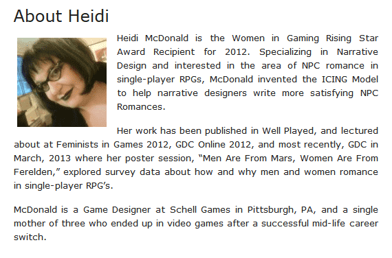
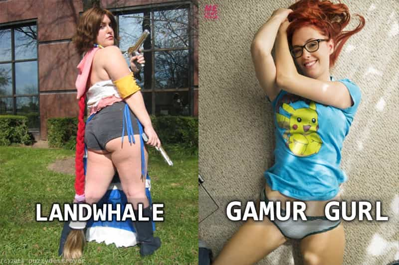

< < < Back
3 Ways Women Have Ruined Video Games – Return Of Kings
The video game industry and culture changed substantially when women started to get involved. Whenever a successful male industry is created, a biological urge to change it comes from those with two X chromosomes. Here are e three ways that women have ruined gaming culture:
1. Inclusiveness
The videogame culture of the 70’s – 00’s was about making fun games to sell to consumers. This could mean controlling Bill and Lance from “Contra” to Duke in “Duke Nukem.” You bought video games that appealed to you and didn’t support the ones you didn’t like. Women don’t understand this basic formula. They would rather screech about a game not including a strong female role model than actually make a video game with a strong female role model.
A female Youtuber named Anita Sarkeesian used this premise to rally for more feminist narratives. A normal alpha would use Kickstarter to make a high budget game that appeals to them. Anita instead spent time begging on Kickstarter and used it to raise over $150,000 dollars to make snarky videos on an iMac. Females always want to be inclusive without putting in the work themselves. One example is this fat lady named Heidi.

This is an example of a woman who wants to write a poly-amorous love triangle in video games instead of working on a new physics engine. It’s also not surprising that she’s a fat single mother with a useless degree. If we had this chick developing games instead of Shigeru Miyamato, Mario would be a transgender Eskimo amputee and he would beat up racist men instead of saving the princess. It would also mean that video game companies would go out of business. Since the type of feminists the “social justice” games would be marketed to rarely support businesses that aren’t clothing, decadent food and media publications. In the big scheme of things, video-game companies need talented men to produce content that would be used to subsidize feminist outreach programs made by the same companies. Every time you see a conference or panel at a convention hosted by a video-game company about getting more women into the industry, you know that these wouldn’t even be possible without Joe Nerd spending 16 hours a day, 7 days a week unknowingly subsidizing it. Women want to be involved in things but don’t want to do the actual work to do so.
2. Video Game Journalism
Women and beta males have made video game journalism an entry point for dilettantes with humanity majors. Most major publications like Kotaku, Gawker, IGN, and Gamespot rather complain about how “sexist” GTA is than write actual meaningful game content. Video game publications have turned into tabloids with female writers at the helm. Most people can’t name a female game journalist because they coast on their male colleagues who do the actual work.
You’ll never have a Louis Theroux in the video game industry because women who work in the industry would bitch about inquisitive questions. They would rather write about some dumb ass model dressed up as a video-game character than something substantive.
3. Gamer Girls
The last part of this trifecta of regression is the culture of gaming brought in by women. The beta males of video gaming culture are the thirstiest betas in existence. When a former porn star can make more money by streaming video games for donations instead taking a fat dick, you know there has to be betas behind that.
You go to any Youtube channel about gaming and it will have a useless pretty chick talking about her experiences with Pokemon as a child. These women are not actual gamers but women riding a fad. They’re called “Gamer Gurls” for the reason to mock the gurl phrase that feminists like to use. These semi-attractive chicks have learned that they can get the princess treatment by pretending to be a video game enthusiast. Also another type of chick started to pop up. These women though don’t have the facade of being attractive. Instead they use videogames to up their social status. The land whales realized that if they could fake their enthusiasm for games, some video game beta would find them attractive as well. The betas fight over these chicks and since they’re all manginas of the highest degree. This is one of the reasons that betaness and even omeganess are the norms in video game culture.

Because of these reasons, video games have declined since their great rise in the 70’s-00’s. Girl gamers and their beta male hangers-on rather buy Call of Duty than support quality products. Don’t let women in to your sub-culture unless you want it permanently disfigured. Too bad they already did it to my favorite sub-culture.
Read Next: 5 Things I Learned From Call Of Duty


{kind=link}
{kind=link}
{kind=link}